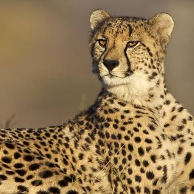

Cheetah

Cheetahs are the fastest land animals and are known for their incredible speed and distinctive coat.
Physical Characteristics
- Speed: Cheetahs are the fastest runners among land animals, reaching speeds of up to 60-70 miles per hour (97-113 kilometers per hour).
- Coat: They have a unique coat with black spots on a tawny background, which helps them blend into their surroundings.
- Body: Cheetahs have a lean, muscular body with a small head, a distinctive tear mark pattern under their eyes, and non-retractable claws.
Behavior and Habitat
- Habitat: Cheetahs inhabit various regions in Africa, from grasslands and savannas to scrublands and open forests.
- Solitary Behavior: Cheetahs are usually solitary animals, except during mating or when a mother is raising her cubs.
- Hunting: They rely on their speed and agility to catch prey, primarily focusing on small to medium-sized ungulates like gazelles.
Diet
Cheetahs are carnivores and primarily feed on ungulates, such as gazelles and impalas.
Conservation Status
Cheetahs are listed as "Vulnerable" by the International Union for Conservation of Nature (IUCN) due to habitat loss, poaching, and human-wildlife conflict.
Interesting Facts
- Acceleration: Cheetahs can accelerate from 0 to 60 miles per hour in just a few seconds, covering distances of up to 500 meters.
- Reproduction: Female cheetahs usually give birth to 3-5 cubs after a gestation period of about 90-95 days.
- Retractable Claws: Unlike other big cats, cheetahs have semi-retractable claws, which provide traction while running.